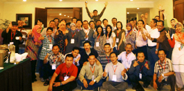
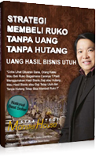
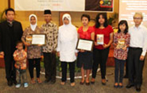
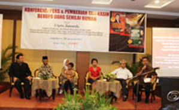
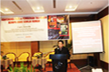
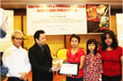
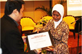
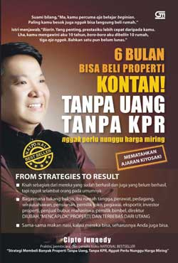

NEWS & BLOG
- //
- HOME
- /
- NEWS & BLOG
Overview
IKUTI SEMINAR
GRATIS
UNTUK MENDAFTAR, SMSKAN :
NAMA_KOTA_SESI KE 081 357 311 979

SEMINAR JAKARTA
Hotel Merucure Rekso (Hayam Wuruk)
Rabu, 27 Maret 2013
Sesi I : Pk. 10.00 // Sesi II : Pk. 14.00
Sesi I : Pk. 10.00 // Sesi II : Pk. 14.00
SEMINAR BANDUNG
Hotel Gino Ferucci (Braga)
Rabu, 27 Maret 2013
Sesi I : Pk. 10.00 // Sesi II : Pk. 14.00
Sesi I : Pk. 10.00 // Sesi II : Pk. 14.00
MAN OF THE YEAR 2011
Pada tanggal 23 Desember 2011 bertempat di Santika Premier Hotel Semarang, Bapak Cipto Junaedy menerima penghargaan sebagai Man of The Year 2011 bersama dengan Yusuf Kalla, Andi Mallarangeng & Jokowi.
STRATEGI MEMBELI RUKO TANPA UANG TANPA HUTANG

Selain sebagai Investor, Praktisi, Bapak Cipto Junaedy juga menulis buku-buku yang selalu menjadi National Bestseller terbitan Gramedia Pustaka Utama. Kali ini Bapak Cipto Junaedy juga melahirkan karya khusus dalam bentuk E-book Strategi Membeli Ruko Tanpa Uang, Tanpa Hutang (Strategi Monster House). Edisi Strategi ini Eksklusif dalam bentuk E-book.
STRATEGI MEMBELI RUKO TANPA UANG TANPA HUTANG

Bp. Cipto Junaedy memberikan tali kasih kepada keluarga almarhum Jupriyanto. Jupriyanto adalah relawan yang sudah lama membaktikan dirinya untuk membantu para korban bencana di berbagai daerah, seperti dalam peristiwa gempa Bantul, tsunami di Pangandaran, dan sejumlah wilayah yang dihempas banjir. Lelaki 35 tahun ini bertaruh nyawa demi menyelamatkan nyawa orang tanpa peduli agama dan suku. Sayangnya, perjalanan mulia Jupri berakhir di kampung halamannya - Cangkringan, Harjobinangun, Sleman, Jogjakarta - ketika erupsi Merapi terjadi. Dia gugur menjadi korban bencana Merapi dan meninggalkan istri dan seorang anak yang masih kecil.
Korban bencana Merapi lain yang diberi tali kasih oleh Bp. Cipto Junaedy adalah keluarga almarhum Yuniawan Wahyu Nugroho. Pria 42 tahun ini adalah wartawan Viva News.com. Dia menjadi korban bencana Merapi ketika sedang melakukan liputan khusus di rumah Mbah Maridjan. Wawan, begitu panggilan almarhum, gugur dalam menjalankan tugasnya sebagai wartawan, meninggalkan istri dan anak yang masih kecil.

Berangkat dari keprihatinan itulah, Bp. Cipto Junaedy memberikan tali kasih berupa uang Rp 100 juta kepada mereka sebagai bentuk CSR-nya. Semula tali kasih akan diberikan dalam bentuk rumah namun setelah mempertimbangkan bahwa relokasi keluarga korban tidaklah mudah, maka tali kasih akhirnya diwujudkan dalam bentuk uang. Hal ini sejalan dengan visinya membantu orang banyak untuk memiliki rumah.
Hal ini sekaligus merupakan wujud keberlangsungan program tali kasih “Estafet Kebaikan” yang dicanangkan oleh Bp. Cipto Junaedy pada 2010 lalu. Ketika itu, Bp. Cipto Junaedy juga memberikan tali kasih berupa rumah dan uang senilai rumah kepada 3 keluarga korban penembakan di Cirebon dan Aceh. Mereka adalah dua orang pegawai negeri sipil yang tewas tertembak akibat perampokan gaji guru satu kecamatan di Cirebon dan seorang polisi yang gugur dalam tugas di Aceh. Ketiga almarhum meninggalkan anak-anak yang masih sangat kecil dan bahkan salah satu korban meninggalkan istri yang tengah hamil muda. Link berita selengkapnya dapat diakses
di sini



TELAH TERBIT
Dapatkan di toko buku Gramedia Seluruh Indonesia
CIPTO JUNAEDY ESTAFET KEBAIKAN
"Mengapa estafet? Sebab, penerimanya pasti akan merasa berkewajiban berbagi kebahagiaan dengan orang lain," katanya di Graha Pena Jakarta kemarin (7 Juni 2010).
Tak sekadar berteori, Bp. Cipto kemarin memulai estafet kebahagiaan itu dengan memberikan satu unit rumah kepada Riaminta Simbolon, janda mendiang Briptu Boas Woisiri, anggota Densus 88 yang tewas tertembak saat mengejar teroris di pedalaman Aceh.
Hadiah uang tunai seharga rumah juga diberikan kepada janda almarhum Rudiman dan almarhum Sutikno, pegawai Dinas Pendidikan Kota Cirebon yang tewas ditembak perampok ketika mengambil gaji guru sekecamatan.
Acara ini didukung oleh Jawa Pos dan Gramedia.
NATIONAL MEGA BEST-SELLER
Dapatkan di toko buku Gramedia Seluruh Indonesia